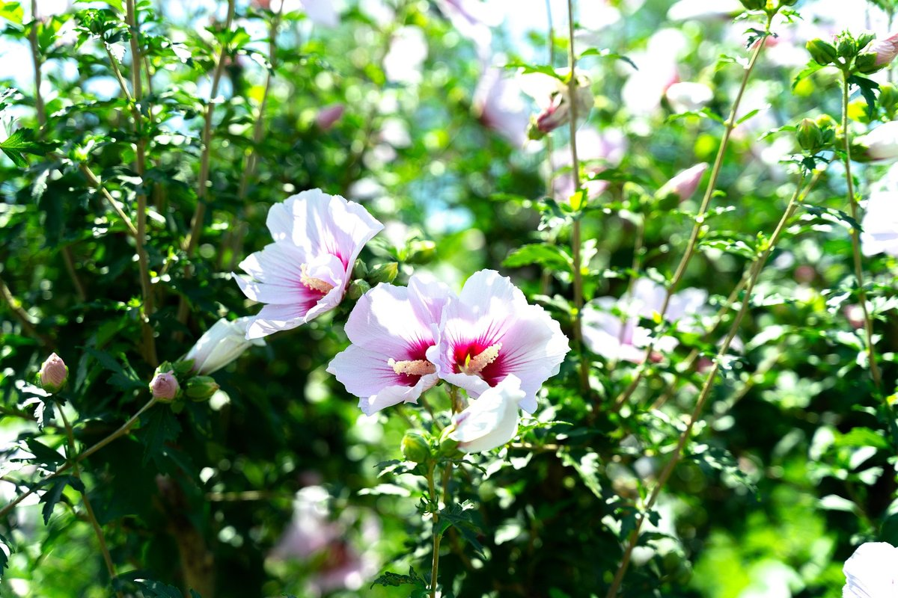

직성고등학교
JIKSEONG HIGH SCHOOL
1.개요
이곳에 학교에 대한 간단한 개요를 작성하세요.
2.학교 연혁
이곳에 학교의 역사와 연혁을 작성하세요.
3.학교 상징
3.1.교표
교표
이곳에 교표에 대한 설명을 작성하세요.
3.2.교화

무궁화
이곳에 교화(校花)에 대한 설명을 작성하세요.
3.3.교목
주목
이곳에 교목(校木)에 대한 설명을 작성하세요.
3.4.교훈
이곳에 교훈에 대한 설명을 작성하세요.
3.5.건학이념
이곳에 건학이념을 작성하세요.
3.6.교육목표
이곳에 교육목표를 작성하세요.
4.학교 특징
4.1.교복
이곳에 교복에 대한 설명을 작성하세요.
4.2.직성특별전형
이곳에 직성특별전형에 대한 설명을 작성하세요.
5.학교 시설
이곳에 학교 시설을 작성하세요.
6.학교 생활
이곳에 학교 생활(학사 일정, 행사 등)을 작성하세요.
7.기타
이곳에 기타 사항을 작성하세요.